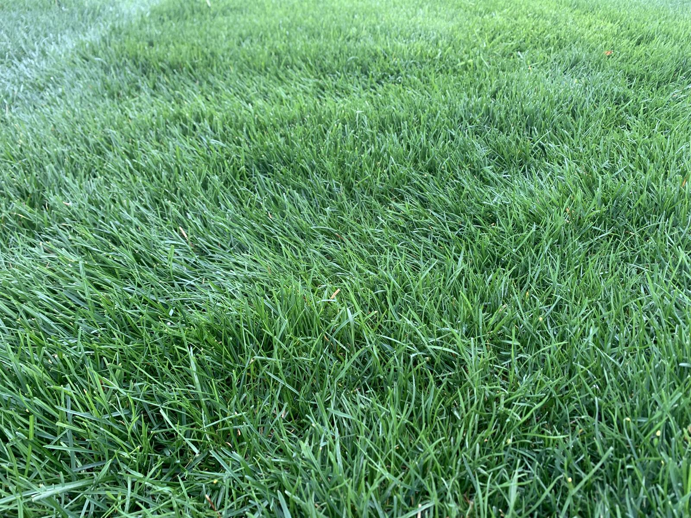
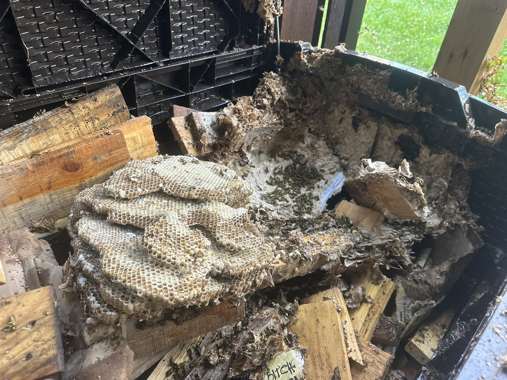
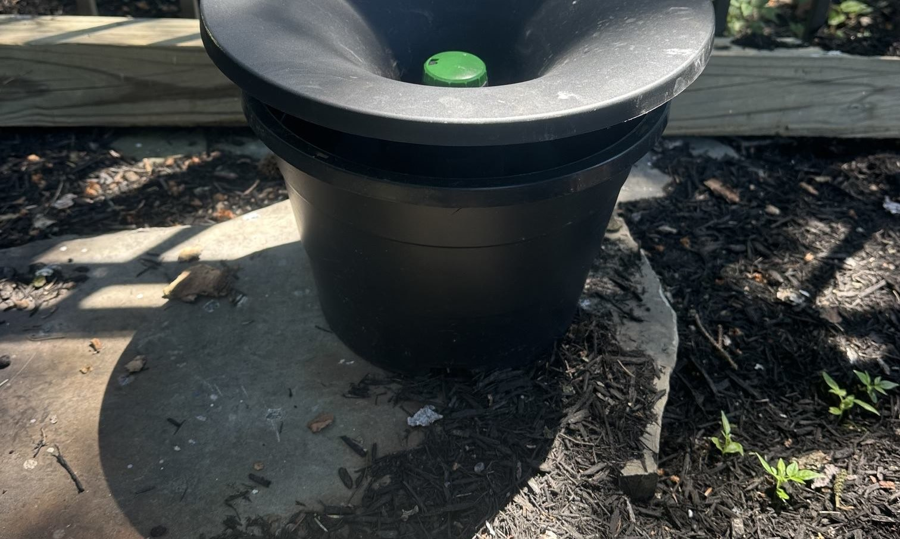
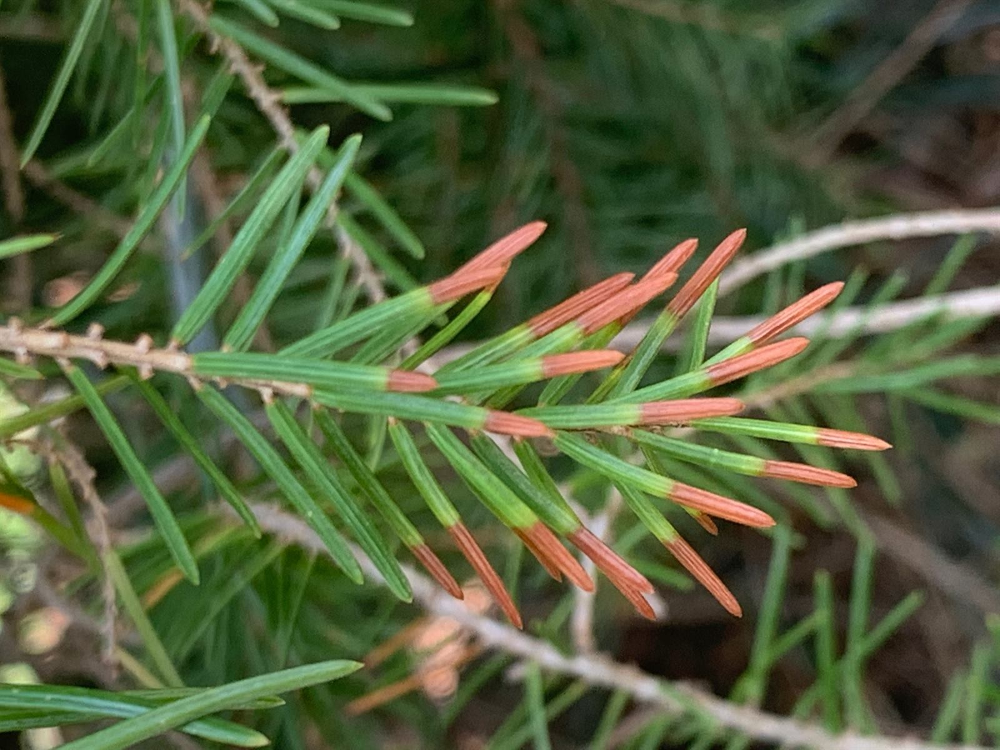
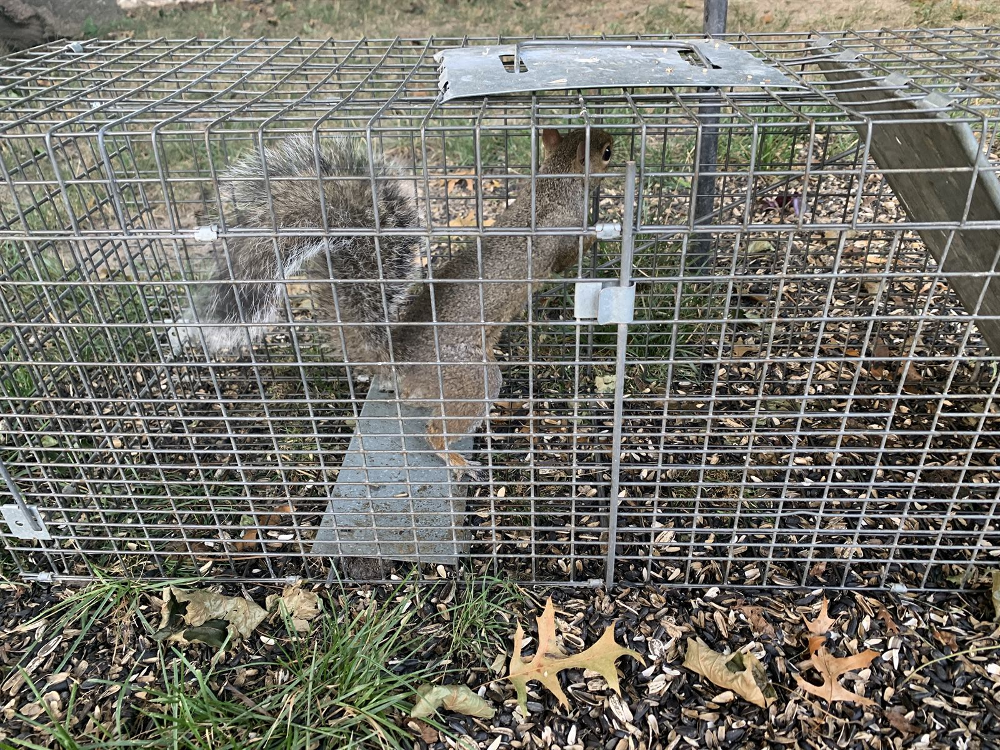
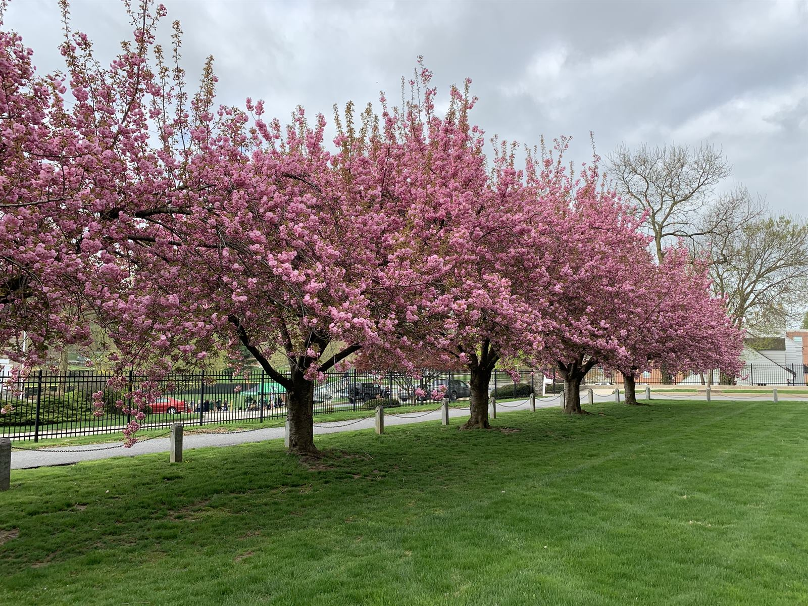
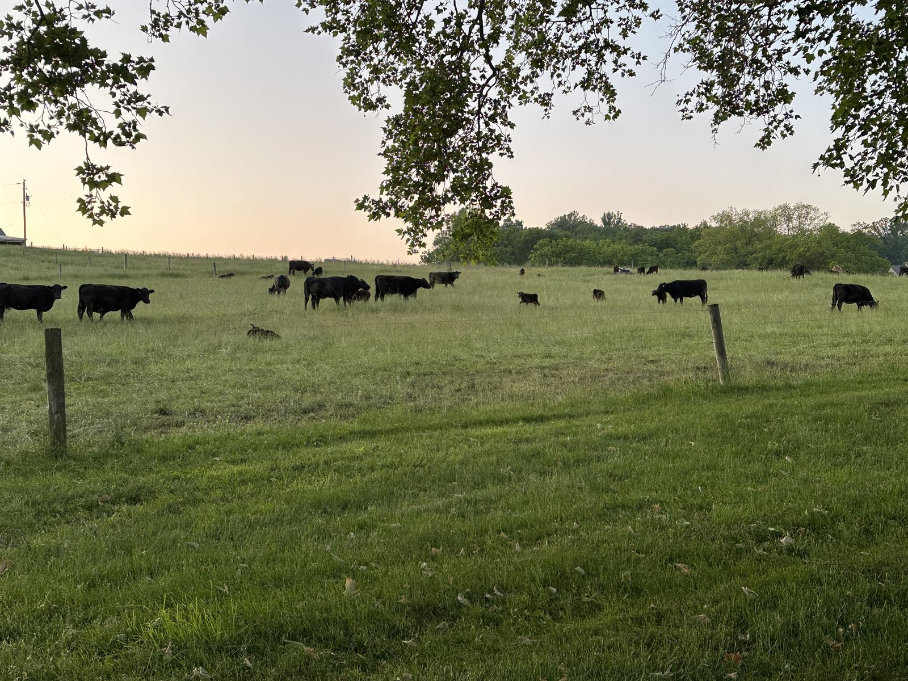
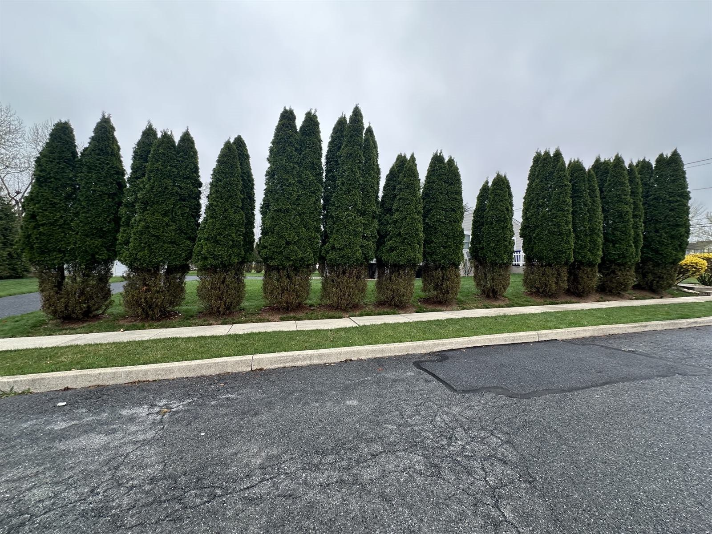
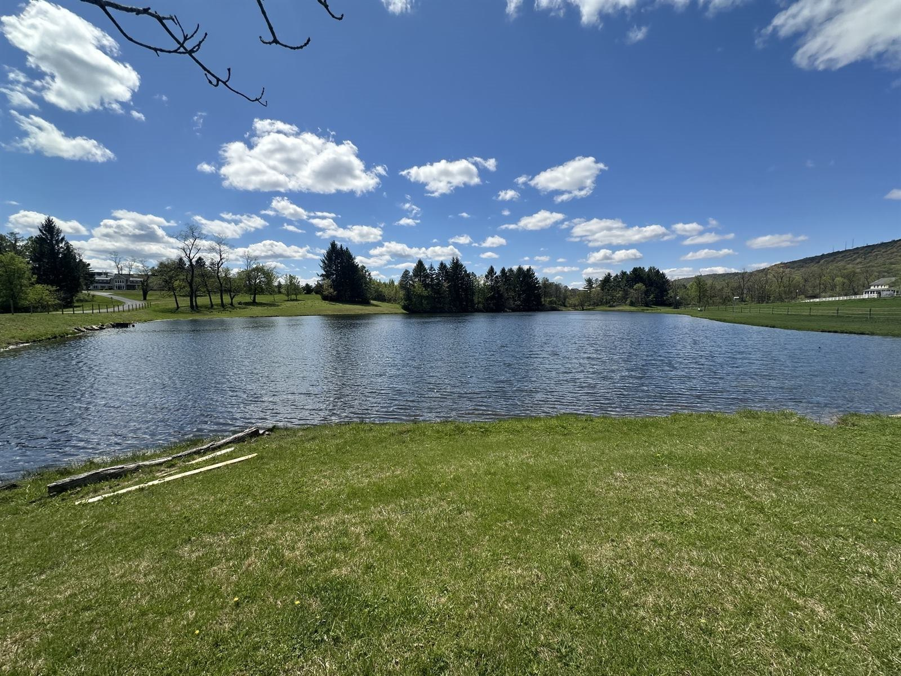

Our Services

Lawn Care
Fertilization, weed control, crabgrass pre-emergent, core aeration, overseeding, soil testing, and lawn renovation. Traditional and fully organic programs.
Learn more →
Pest Control
Perimeter-based pest control — ants, spiders, yellow jackets, hornets, wasps, fly remediation, and seasonal prevention. No indoor spraying.
Learn more →
Mosquito & Tick Control
Yard barrier treatments, In2Care stations, EcoGuard Plus fully organic applications, and seasonal programs.
Learn more →
Plant Health Care
Insect and disease control for ornamental trees and shrubs, systemic treatments, root zone fertilization, spotted lanternfly management.
Learn more →
Honey Bee Removal
Live honey bee removal and relocation in coordination with The Alleman Apiary. Bees relocated to working hives, never exterminated.
Learn more →
Nuisance Wildlife
PA-licensed NWCO services for raccoons, groundhogs, squirrels, skunks, opossums, bats, and snakes. Trapping, removal, exclusion.
Learn more →
Pollinator Restoration
Pollinator-friendly lawn programs, pesticide audits, native plant guidance, and bee-safe mosquito control. The only Central PA pest control company that also runs a working apiary.
Learn more →
Agricultural Pest Service
Fly control for cattle, poultry mite and louse treatments, sheep and goat parasite control, and varroa mite management for honey bees.
Learn more →
Deer Damage Repair & Prevention
Repellent applications for arborvitae, hostas, yews, and ornamental shrubs. Seasonal prevention programs that protect plants through winter browse season.
Learn more →
Pond & Aquatic Service
Pond weed control, algae management, and mosquito larvae treatments. Licensed aquatic applicator with PA DEP permitting handled.
Learn more →